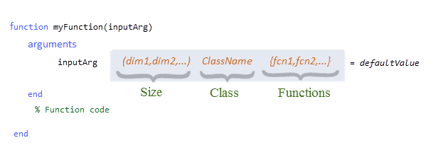

Function Argument Validation
Function argument validation is a way to declare specific restrictions on function arguments. Using argument validation you can constrain the class, size, and other aspects of arguments without writing code in the body of the function to perform these tests.
Function argument validation is declarative, which enables MATLAB® desktop tools to extract information about a function by inspection of specific code blocks. By declaring requirements for arguments, you can eliminate cumbersome argument-checking code and improve the readability, robustness, and maintainability of your code.
The function argument validation syntax simplifies the process of defining optional, repeating, and name-value arguments. The syntax also enables you to define default values in a consistent way.
Where to Use Argument Validation
The use of function argument validation is optional in function definitions. Argument validation is most useful in functions that can be called by any code and where validity of the arguments must be determined before executing the function code. Functions that are designed for use by others can benefit from the appropriate level of restriction on arguments and the opportunity to return specific error messages based on the argument validation checks.
Where Validation Is Not Needed
In local and private functions, and in private or protected methods, the caller is aware of input requirements, so these types of functions can be called with valid arguments.
Where Validation Is Not Allowed
You cannot use argument validation syntax in nested functions, abstract methods, or handle class destructor methods. For more information on argument validation in methods, see Method Syntax.
arguments Block Syntax
Functions define argument validation in optional code blocks that are delimited by the
keywords arguments and end. If used, an
arguments block must start before the first executable line of the
function.
You can use multiple arguments blocks in a function, but all blocks
must occur before any code that is not part of an arguments block.
The highlighted area in the following code shows the syntax for input argument validation.

The function argument declaration can include any of these kinds of restrictions:
Size — The length of each dimension, enclosed in parentheses
Class — The name of a single MATLAB class
Functions — A comma-separated list of validation functions, enclosed in braces
You can also define a default value for the input argument in the function validation declaration for that argument. The default value must satisfy the declared restrictions for that argument.
Validate Size and Class
Size
Validation size is the dimensions of the argument, specified with nonnegative integer
numbers or colons (:). A colon indicates that any length is allowed in
that dimension. You cannot use expressions for dimensions. The value assigned to the
argument in the function call must be compatible with the specified size, or MATLAB throws an error.
MATLAB indexed assignment rules apply to size specifications. For example, a 1-by-1
value is compatible with the size specified as (5,3) because
MATLAB applies scalar expansion. Also, when possible MATLAB changes the shape of the input to satisfy the size validation given. For
example, for a size specified as (1,:) can accept a size of 1-by-n and
n-by-1.
Here are some examples:
(1,1)— The input must be exactly 1-by-1.(3,:)— The first dimension must be 3, and second dimension can be any value.
If you do not specify a size, then any size is allowed unless restricted by validation functions.
Class
Validation class is the name of a single class. The value assigned to the function
input must be of the specified class or convertible to the specified class. Use any
MATLAB class or externally defined class that is supported by MATLAB, except Java, COM classes, and MATLAB class definitions that do not use the classdef keyword (classes defined before MATLAB software Version 7.6).
Here are some examples:
char— Input must be of classcharor a value that MATLAB can convert to achar, such asstring.double— Input can be a numeric value of any precision.cell— Input must be a cell array.A user-defined class
If you do not specify a class, then any class is allowed unless restricted by validation functions.
Example: Basic Argument Validation
This arguments block specifies the size and class of the three
inputs.
function out = myFunction(A, B, C) arguments A (1,1) string B (1,:) double C (2,2) cell end % Function code ... end
In this function, the variables must meet these validation requirements:
Ais a string scalar.Bis a 1-by-any length vector of doubles.Cis a 2-by-2 cell array.
Validation Functions
A validation function is a MATLAB function that throws an error if certain requirements are not satisfied by the argument value. Validation functions do not return values and, unlike class and size, cannot change the value of the arguments they are validating.
During the validation process, MATLAB passes the argument value to each validation function listed for that argument. The value passed to the validation functions is the result of any conversion made by the class and size specifications. MATLAB calls each function from left to right and throws the first error encountered.
For a table of predefined validation functions, see Argument Validation Functions.
Example: Set Specific Restrictions Using Validation Functions
Validation functions can restrict arguments in more specific ways. You can use predefined validation functions for many common kinds of validation, and you can define your own validation function to satisfy specific requirements.
For example, this function specifies the following validations using mustBeNumeric, mustBeReal, mustBeMember, and the local function mustBeEqualSize.
Input
xmust be a real, numeric row vector of any length.Input
vmust be a real, numeric row vector the same size asx.Input
methodmust be a character vector that is one of the three allowed choices. Becausemethodspecifies a default value, this argument is optional.
function myInterp(x,v,method) arguments x (1,:) {mustBeNumeric,mustBeReal} v (1,:) {mustBeNumeric,mustBeReal,mustBeEqualSize(v,x)} method (1,:) char {mustBeMember(method,{'linear','cubic','spline'})} = 'linear' end % Function code .... end % Custom validation function function mustBeEqualSize(a,b) % Test for equal size if ~isequal(size(a),size(b)) eid = 'Size:notEqual'; msg = 'Size of first input must equal size of second input.'; error(eid,msg) end end
Avoid using function argument validation within custom validation functions. For more information about defining validation functions and a list of predefined validation functions, see Argument Validation Functions.
Default Value
An input argument default value can be any constant or expression that satisfies the size, class, and validation function requirements. Specifying a default value in an argument declaration makes the argument optional. MATLAB uses the default value when the argument is not included in the function call. Default value expressions are evaluated each time the default is used.
Note
Because MATLAB validates the default value only when the function is called without a value for the argument, an invalid default value causes an error only when the function is called without that argument.
Optional arguments must be positioned after required arguments in the function signature
and in the arguments block. For more information on optional arguments,
see Validate Required and Optional Positional Arguments.
Conversion to Declared Class and Size
Both class validation and size validation can change the value of an argument. Here are some examples of conversions that MATLAB can perform.
To satisfy class restrictions:
A
charvalue can be converted to astringvalue.A
singlevalue can be converted to adouble.
To satisfy size restrictions:
Scalar expansion can change input size from scalar to nonscalar.
A column vector can be converted to a row vector.
As a result, the validated value in the function body can be different from the value passed when calling the function. For more information on class conversion, see Implicit Class Conversion. To avoid class and size conversions during validation, use argument validation functions instead. For more information, see Use Validation Functions to Avoid Unwanted Class and Size Conversions.
Example: Value Conversion
The following function illustrates how inputs can be converted to match the classes
specified in the arguments block. The SpeedEnum
class is an enumeration class created to define the values allowed for the third argument.
function forwardSpeed(a,b,c) arguments a double b char c SpeedEnum end % Function code disp(class(a)) disp(class(b)) disp(class(c)) end
Here is the enumeration class.
classdef SpeedEnum < int32 enumeration Full (100) Half (50) Stop (0) end end
This call to the function uses input values that MATLAB can convert to the declared types. The actual argument types within the function are displayed as output.
forwardSpeed(int8(4),"A string",'full')
double char SpeedEnum
Output Argument Validation
Starting in R2022b, argument validation can be used on output arguments. Similar to input arguments, you can validate the class and size of output arguments and also apply validation functions. However, you cannot specify default values for output arguments or refer to previously declared arguments. Output argument validation is always optional. Adding output argument validation helps improve code readability and also maintains consistent output in code that might change over time.
Separate arguments blocks must be used for validating input and
output arguments. Define the type of arguments block (Input) or
(Output) after the arguments statement. If both
(Input) and (Output) argument blocks are used, the
(Output) block must follow the (Input) block. then
If no type is specified, then MATLAB assumes the block contains input arguments.
For more information, see arguments.
Example: Validate Output Arguments
Starting in R2022b, argument validation can be used on output arguments.
For example, this function validates the size and class of three input arguments and
one output argument using separate arguments blocks. Note that the
(Input) block must precede the (Output)
block.
function out = myFunction(A, B, C) arguments (Input) A (1,1) string B (1,:) double C (2,2) cell end arguments (Output) out (1,:) double end % Function code ... end
Kinds of Arguments
Function argument validation can declare four kinds of arguments. Functions can define any of these kinds of arguments, but the arguments must be defined in the following order:
| Argument Type | Additional Information |
|---|---|
1. Required positional arguments | Validate Required and Optional Positional Arguments |
2. Optional positional arguments | |
3. Repeating positional arguments | Validate Repeating Arguments |
4. Optional name-value arguments | Validate Name-Value Arguments |
Order of Argument Validation
When a function is called, MATLAB validates the arguments in the order they are declared in the
arguments block, from top to bottom. Each argument is fully validated
before the next argument is validated. Therefore, any reference to a previously declared
argument uses values that have been validated. Functions throw an error as a result of the
first validation failure.
Validated values can be different from the original values passed as inputs when the
function is called. For example, this function declares the inputs as class uint32 values. The third input declaration assigns a default value equal to
the product of the first two inputs.
function c = f(a, b,c) arguments a uint32 b uint32 c uint32 = a.* b end % Function code ... end
Calling the function with inputs that are a different numeric class (for example,
double) results in a conversion to uint32.
c = f(1.8,1.5)
Because the optional argument c is not specified in the function
call, MATLAB evaluates the default value and assigns it to c after
converting a and b to uint32
values. In this case, the conversion results in a value of 2 for both inputs. Therefore, the
product of a times b is four.
c = uint32 4
If you specify a value for the third input, then the function assigns a value to
c and does not evaluate the default value expression.
c = f(1.8,1.5,25)
c = uint32 25
Restrictions on Variable and Function Access
arguments blocks exist in the function's workspace. Any packages,
classes, or functions added to the scope of the function using the import command are added to the scope of the arguments
block.
The only variables visible to validator functions and default value expressions are the
input variables already declared. In this function, the default value of
c is derived from a and b.
function c = f(a,b,c) arguments a uint32 b uint32 c uint32 = a * b end % Function code ... end
However, you cannot refer to input variables not yet declared in an
arguments block. For example, using this declaration for argument
a in the previous function is not valid because b
and c have not been declared yet.
arguments a uint32 = b * c b uint32 c uint32 end
Argument validation expressions can reference only previously declared, and therefore validated, arguments. Validation functions and default values for name-value arguments cannot access other name-value arguments.
Limitations on Functions in arguments Block
Any references to previously declared arguments must be visible in the text of
validation functions and default values. To ensure code transparency, do not use functions
that interact with the function workspace. Specifically, do not use nested functions or
any of the functions listed in the following table in the arguments
block.
assignin | builtin | clear |
dbstack | eval | evalc |
evalin | exist | feval |
input | inputname | load |
nargin | narginchk | nargoutchk |
save | whos | who |
These restrictions apply only within the arguments block and do not
apply to variables or functions in the body of the function.
Debugging Arguments Blocks
While debugging inside of an arguments block the workspace is read only. This means that it is possible to inspect the workspace and view the values assigned to variables. However, it is not possible to create new variables or change the values assigned to existing variables while the workspace is read only. Once the debugger is outside of the arguments block it will once again be possible to create or edit variables.